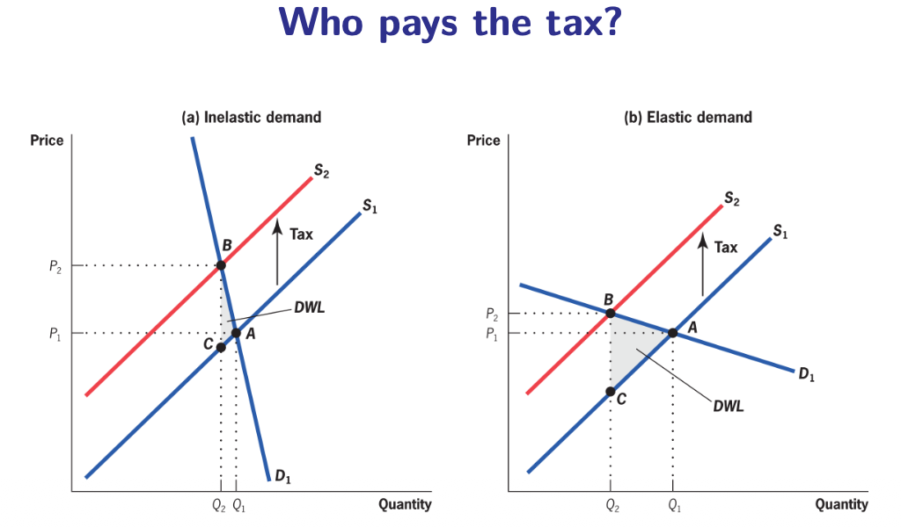
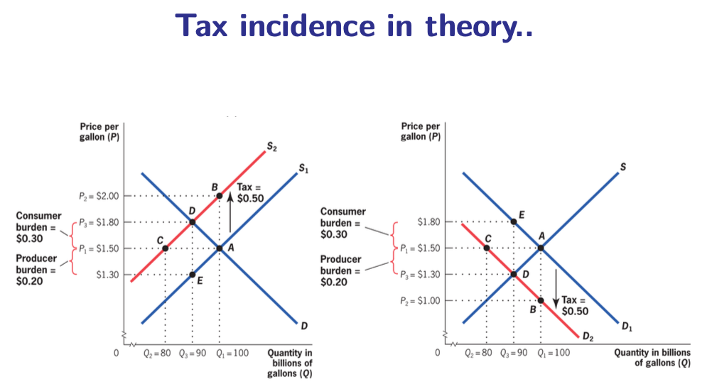

9.4 — Tax Incidence: Who Really Pays?
Chapter 9: Taxation & Tax Incidence — Following the Money
What Is Tax Incidence?
Tax incidence is the study of who ultimately bears the burden of a tax. It analyzes how taxes affect prices and the economic welfare of individuals. This is a positive (descriptive) analysis — it tells us what actually happens when a tax is imposed, not what should happen.
The key insight of tax incidence theory is a distinciton that surprises most people:
📜 Statutory (Legal) Incidence
Who the law says should pay the tax. For example: "a 21% VAT is levied on the seller" or "employers must pay a 25% payroll tax."
💰 Economic Incidence
Who actually ends up paying the tax after all market adjustments have occurred. The employer may legally owe the payroll tax, but if they cut wages in response, workers are the ones who truly pay.
Example: A capital income tax is designed by legislators to fall on the rich (owners of capital). But capital owners may respond by raising the prices of goods they produce or by reducing wages for their employees. In the end, the tax burden is partly transferred to consumers and workers — who are often poorer than the capital owners the tax was supposed to hit.
Elasticity Determines Who Pays
The single most important rule of tax incidence is this: the side of the market that is less responsive to price changes (more inelastic) bears a larger share of the tax burden.

Inelastic Demand (Left)
Consumers need the good and cannot easily switch (think: insulin, gasoline, baby formula). When the tax shifts supply from $S_1$ to $S_2$, the consumer price $P_c$ rises a lot while the producer price $P_p$ falls only a little. Consumers bear most of the tax burden because they cannot reduce their purchases.
Elastic Demand (Right)
Consumers can easily switch (think: a specific brand of clothing, restaurant meals). When the tax hits, consumers dramatically reduce purchases. The producer cannot raise the price much without losing all customers, so $P_p$ drops significantly. Producers bear most of the tax burden because they absorb it to maintain sales.
It Doesn't Matter Who the Law Targets
One of the most counterintuitive results in all of economics:

In the left panel, the tax is legally imposed on producers (supply shifts up from $S_1$ to $S_2$). In the right panel, the exact same tax is legally imposed on consumers (demand shifts down from $D_1$ to $D_2$).
The result? The economic outcome is identical. Consumers pay the same effective price ($P_c$), producers receive the same net price ($P_p$), and the same quantity is traded ($Q_2$). The division of the tax burden between consumers and producers is exactly the same in both cases.
This result has enormous policy implications: when politicians announce "we are taxing corporations, not workers!" they may be making a purely cosmetic distinction. If the corporation responds by cutting wages or raising prices, the workers and consumers end up paying anyway. Statutory incidence is irrelevant — only economic incidence matters.
For the exam: This invariance result is one of the most important insights in the course. Be able to draw both panels and explain clearly why the economic outcome is the same. The key phrase: "The final distribution of the tax burden depends on elasticities, not on whether the tax is formally imposed on buyers or sellers."
Real-World Twist: Asymmetric Pass-Through
The textbook model predicts symmetric effects: if a tax increase raises the consumer price by €2, then a tax decrease of the same amount should lower the consumer price by €2. But research has shown that reality is asymmetric.
The EU allowed Finland to run a natural experiment: VAT on hairdressing salons was decreased by 14 percentage points in 2007, then increased back by 14 p.p. in 2012. Beauty salons served as the control group.
Prices Dropped Only Slightly
When VAT was cut, firms did not fully pass the reduction on to consumers. Prices fell only partially. Instead, firm profits jumped — the hairdressers pocketed a large part of the tax savings themselves.
Prices Jumped Sharply
When VAT was increased back, firms raised prices sharply. They passed nearly all of the tax increase on to consumers. Profits fell only moderately — firms protected themselves by shifting the burden to buyers.
Why does this asymmetry exist? Two main explanations from the literature:
-
Consumer Inattention (Low Tax Salience)
Consumers are inattentive to taxes — they don't track exact tax rates or post-tax prices carefully. This means they don't pressure firms to cut prices when taxes fall, so firms quietly pocket the savings. But when a tax increase raises the sticker price, consumers might notice and complain or shop elsewhere — so firms only raise prices as much as the tax, not more. (Chetty et al., 2009, confirmed this with supermarket field experiments in the US.)
-
Producer Market Power
Firms have more pricing power than the textbook model assumes. They can easily justify a price increase ("VAT went up!") but face no pressure to cut prices ("VAT went down — but our costs also rose..."). Consumers accept the first excuse but never demand the second.
In a US supermarket, researchers placed after-tax price tags (showing the full price including sales tax) next to certain products, while keeping normal pre-tax tags on other products. Result: when consumers could see the full tax-inclusive price, they bought 8% less. This proves that tax salience matters enormously — when taxes are hard to see (embedded in the price), consumers underreact and firms exploit this.
Chapter 9 — Grand Conclusion
Taxation is the most important instrument of government. Getting it right requires balancing four competing goals simultaneously:
⚡ Efficiency
Minimize DWL. Tax inelastic goods. Tax many things a little. Watch the Laffer curve.
⚖️ Equity
Vertical: the rich pay more (progressive). Horizontal: equals treated equally. Don't crush the poor with regressive taxes.
🔄 Flexibility
Taxes should adapt to economic conditions. Progressive income taxes are natural automatic stabilizers.
🔍 Transparency
Citizens should know what they pay and why. Tax salience matters. Hidden taxes invite exploitation by firms.
Exam Strategy for Chapter 9: Structure any essay around (1) the Five Rs for why we tax, (2) the efficiency angle (DWL formula, Laffer, double dividend), (3) the equity angle (vertical + horizontal, diminishing marginal utility, Czech PIT history), and (4) incidence (statutory ≠ economic, elasticities determine burden, asymmetric pass-through). Always draw at least one graph (DWL or incidence).
Chapter 9.4 — The Big Picture:
- Tax incidence = who ultimately bears the burden. Positive (descriptive) analysis.
- Statutory incidence ≠ economic incidence. The law says who pays; the market decides who really pays.
- Golden Rule: The more inelastic side bears more of the tax. Elasticities, not laws, determine burden.
- Invariance result: Whether the tax is legally on buyers or sellers, the economic outcome is identical.
- Benzarti et al. (2020): Tax pass-through is asymmetric. Tax hikes ↗ prices sharply; tax cuts ↘ prices only slightly. Firms pocket tax cuts.
- Why asymmetry? (1) Consumer inattention / low tax salience. (2) Producer market power.
- Chetty et al. (2009): Showing after-tax prices reduced purchases by 8% → tax salience matters.